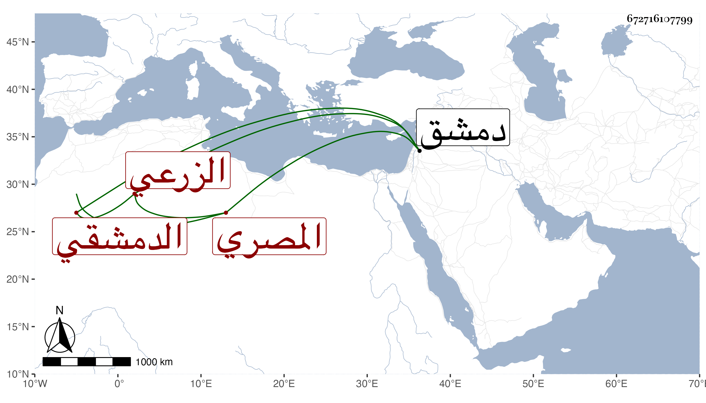

0902Sakhawi.DawLamic.ITO20230111-ara1.EIS1600.672716107799
Biography ID: 672716107799
430
محمد المحب أبو الوفا الزرعي الأصل المصري ثم الدمشقي . ولد في أوائل القرن وتعانى الشهادة ونظم الشعر فأحسن . وكان فقيرا جدا ناقص الحظ إلى الغاية مع خفة روح وانبساط ودعوى عريضة وربما سرق نظم غيره مات في المحرم سنة اثنتين وخمسين بدمشق مطعونا فكان أول من رؤي فيه الطاعون حينئذ، ذكره ابن أبي عذيبة وكتب عنه من نظمه :
| قم زوج الصهباء بابن السما | وإن لحاك العاذل الفاسد |
| أما ترى الورد أتى شاهدا | واللوز في أغصانه عاقد |
